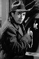

Country:United States, 108 minutes
Spoken languages:English
Genres:Adventure, Crime, Drama, History
Director(s):Alfred Hitchcock
Writer(s):Daphne du Maurier, Sidney Gilliat, Joan Harrison
Video Codec:Unknown
Number: 85


Certification:
Storyline:
In coastal Cornwall, England, during the early 19th Century, a young woman who's come there to visit her aunt, discovers that she's married an inkeeper who's a member of a gang of criminals who arrange shipwrecking and murder for profit.
Cast: 


Medium: Original DVD,
Comments: Part of: 100 Greatest Horror Classics
Loaned: No
Aspect ratio: Unknown